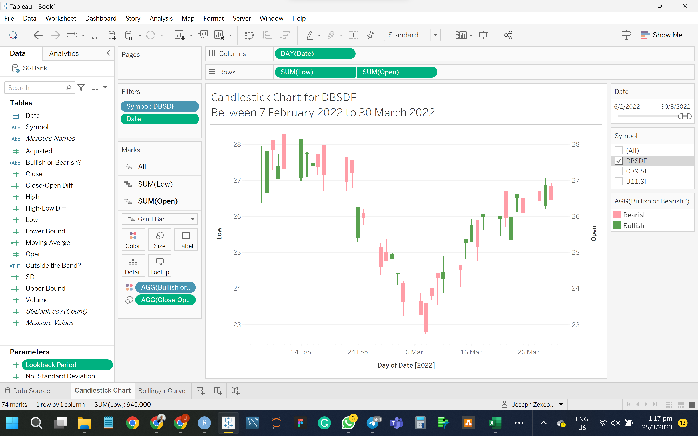
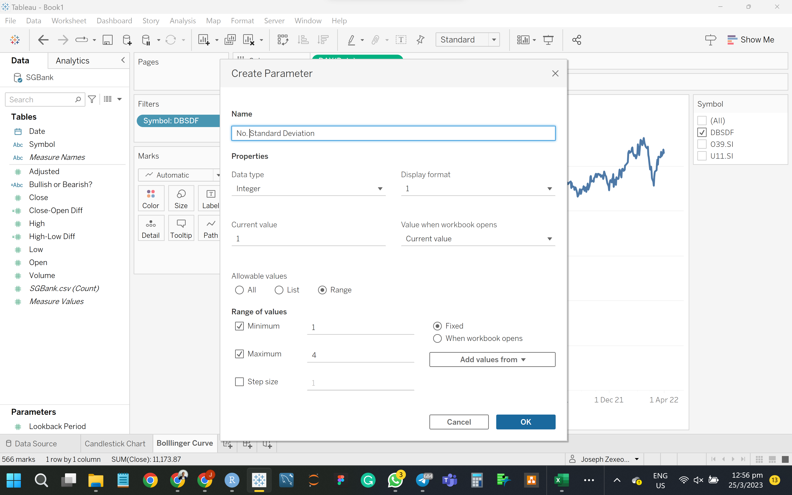
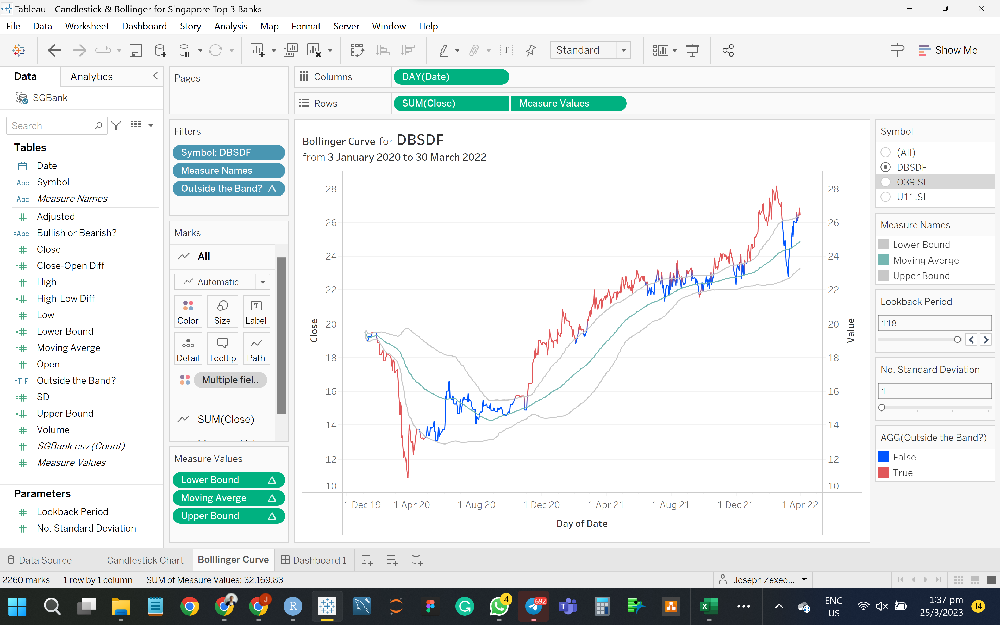

Create Horizon Graph, Candlestick Chart & Bollinger Bands
Inclass Exercise 10 - Financial Data Visualisation & Analysis
1. OVERVIEW
Candlesticks - solid filled when open is higher than the closing price. Empty filled is when the closing price is higher than the open price.
2. VISUALISATION WITH TABLEAU
2.1 Candlestick Chart
step 1- Create 3 calculated fields
Close-Open Diff <- SUM([Close])-SUM([Open])
step 2 - Put Date (Day) into Columns shelf, Low & Open into Rows shelf. Shows Symbol filter.
Step 3 - Dual axis - sync - gantt bar changed
Step 4 - Set
“High-Low Diff” field into “Size” under the “SUM(Low)” card.
“Low-High Diff” field into “Size” under the “SUM(High)” card.
Edit axis to uncheck “Include zero” checkbox. Bullish or Bearish to Color.

2.2 Bollinger Band
Step 1 : Create 2 parameters, namely “Lookback Period” and “No. Standard Deviation”.

Step 2 : Create 5 Calculated Fields.
note : compute with average approach whenever there is a need to view at fixed range of period. Don’t need to average if can view data at daily.
Moving Average
SD
Upper Bound
Lower Bound
Outside the Band?
Step 3 : Measure Values into Rows shelf. Select dual-axis. Synchronise the axis so that all lines are sync between 2 axis.
Step 4 : Drag Lower Bound and Upper Bound to the 2nd axis.
Step 5 : Show both Parameters.
